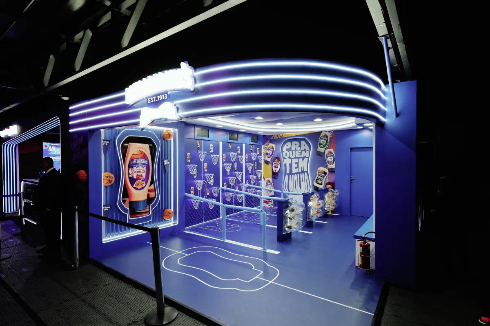

"NBA trouxe rejuvenescimento para a marca", diz parceira da liga no Brasil

Em entrevista à CNN, executiva detalha parceria de sucesso entre a marca e a liga americana, que já dura três anos
Indiana Pacers e Oklahoma City Thunder protagonizam a final da temporada 2024-25 da NBA, a maior liga de basquete do mundo. Em quadra, milhares de fãs do mundo todo assistem aos jogos das duas equipes que buscam, de certa maneira, levantar pela primeira vez o troféu Larry O' Brien.
O sucesso da liga no Brasil não é novidade e vai além de escolher uma franquia para admirar e torcer. O fã brasileiro da NBA que vibra, engaja, viaja, compra produtos fez da liga um verdadeiro "lifestyle" e transformou o país no segundo maior mercado da NBA fora dos Estados Unidos, ficando atrás apenas da China. Pensando no potencial da NBA no Brasil é que a Hellmann's, consolidada marca de produtos alimentícios do país, viu um poderoso seguimento no esporte para atuar.
Atualmente, a marca está presente em diversos eventos que envolvem as franquias americanas no Brasil: na NBA House, no "Boteco Hellmann's" criado em diversas capitais, além da presença em datas de peso no calendário do basquete, como no NBA All-Star Game. Em entrevista à CNN, a CMO da Unilever Alimentos no Brasil & Head de Condimentos na América Latina, Carolina Riotto, contou com exclusividade o processo do atrelamento das marcas, que surgiu da necessidade de Hellmann's se conectar com o público jovem.
Parceria de sucesso
Riotto detalhou que, além de a marca buscar uma mudança de público pensando na NBA, a parceria também se deu pelo calendário dos jogos, atrelando isso a uma maior vendas dos produtos — sobretudo, a maionese. "A gente foi procurar ocasiões de consumo que a gente gostaria de desenvolver, mas ocasiões que tivessem uma intersecção perfeita entre o público jovem, que é consumir a maionese em casa. No nosso plano de negócio, a gente tinha a necessidade de criar uma segunda sazonalidade no ano também", pontuou. "O consumo da NBA no Brasil acontece no momento em que as pessoas estão após estudo, após trabalho, após o seu dia, em casa, no sofá, comendo alguma coisa gostosa e assistindo aos jogos. E aí foi o momento perfeito de casar, ocasião de consumo com o esporte que traz essa cultura pop. Isso garante o rejuvenescimento para marca e suas associações", finaliza. Como a temporada decisiva na NBA acontece sempre no primeiro semestre, foi aí que o caminho se desenhou.
"A maior parte de nós crescemos com o que comemos ali nos almoços de domingo, no Natal... É um pico de vendas muito importante pra gente [no fim do ano], porque faz parte de toda casa do brasileiro, uma salada de maionese, nos eventos de final de ano. E no primeiro semestre a gente tinha a carência de trazer essa inovação. Encontramos na NBA, que tem um pico muito forte no primeiro semestre, nos permitiu criar essa nova sazonalidade", detalha a CMO da Unilever Alimentos no Brasil.
Experiências
A parceria também se deu por todo o universo que gira em torno da liga. A Hellmann's se preocupou em oferecer experiências que vão além de torcer para alguma franquia ou astro da bola laranja.